Personal status, contacts, and route.
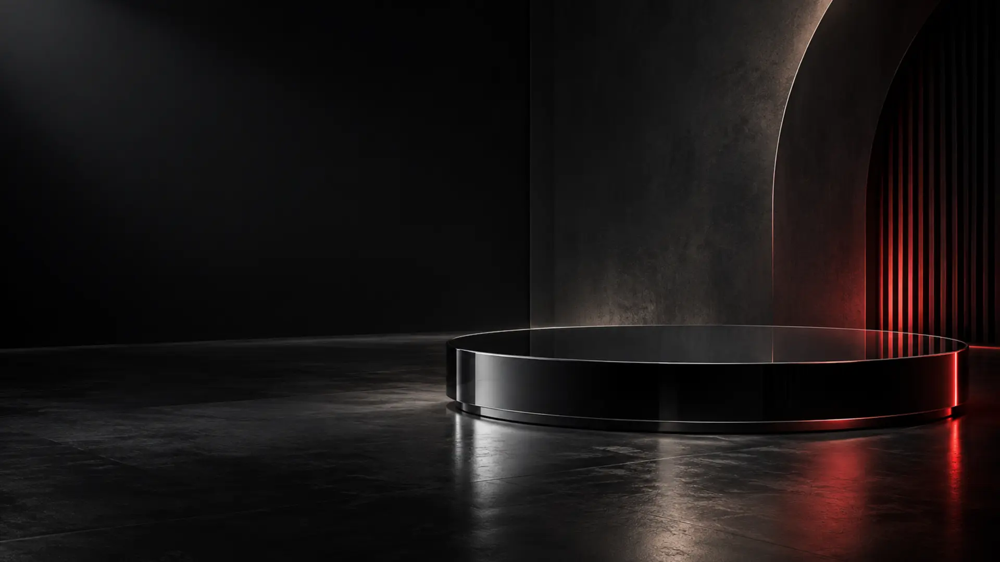
← Selected work
When seconds matter,
03 / SAFE · UI/UX + systems design
When seconds matter,
clarity is safety.
A mobile emergency companion and cross-channel wayfinding concept designed to turn uncertainty into one clear next action.
Read the case study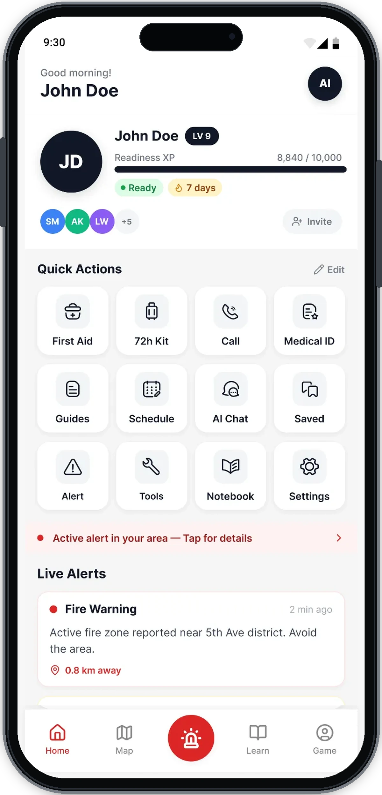
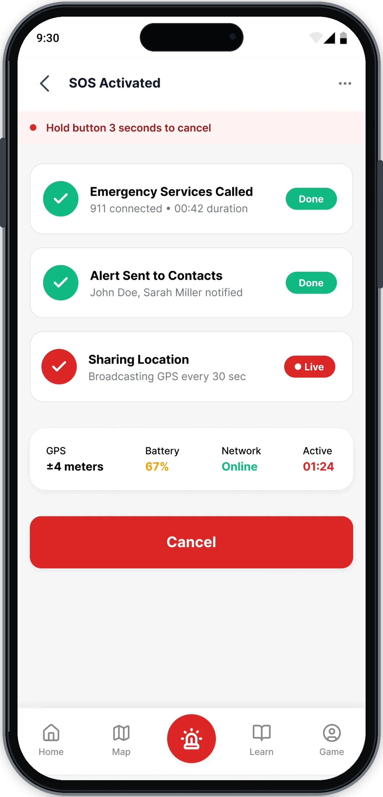
- My role
- Research synthesis, information architecture, UX/UI, prototyping & visual system
- Context
- Academic concept + master’s design research
- Scope
- Mobile app, maps, web/kiosk & environmental wayfinding
- Status
- Conceptual system; not deployed or affiliated with emergency services
01 / The brief
Stress changes how an interface must work.
During an emergency, attention narrows and working memory is under pressure. The design task was not to add more information, but to make the safest action visible, understandable, and continuous across channels.
Design requirement
One clear
One clear
next action.
In a crisis, hierarchy is not decoration. It determines what a person notices, understands, and does first.
- 01Recognise the signal
Severity, source, and location must be identifiable before supporting detail.
- 02Act without interpretation
The primary response uses a direct verb, a stable position, and an unmistakable state.
- 03Confirm what happens next
Every transition reports progress, destination, and system status in plain language.
LOW ATTENTIONTIME PRESSUREUNSTABLE CONNECTIONACCESS NEEDS
02 / The central decision
Design a chain of decisions—not a dashboard of features.
The strongest insight from the research was structural: a person under pressure should not have to reconstruct a route from scattered messages. The interface and physical environment need to repeat the same instruction at each decision point.
- 01
See
Identify severity, source, and location.
- 02
Choose
Commit to one primary response.
- 03
Move
Follow repeated direction and destination cues.
- 04
Confirm
Understand the active state and next step.
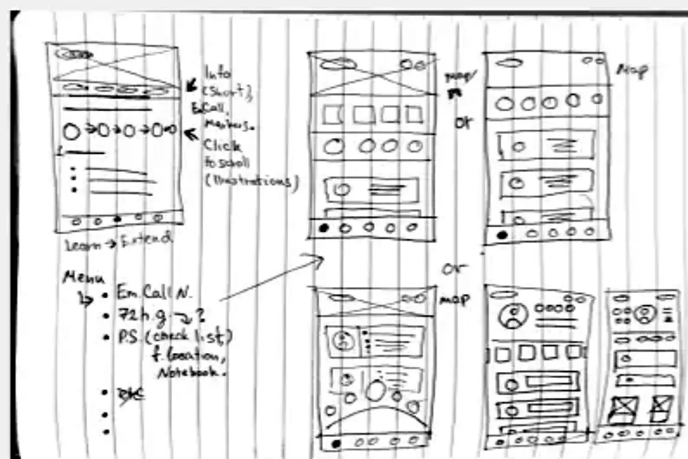
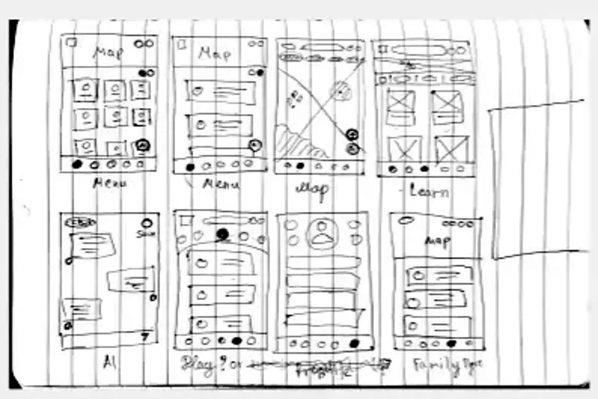
Alerts, navigation, and confirmation were reorganised around critical moments instead of feature categories.
Interface language
Action first.
Context second.
Colour, symbol, label, and position repeat the same meaning across every channel.
SYSTEM SYNTHESIS
!
CRITICAL SIGNALAir-raid alertMove to shelter now
→
SAFE DIRECTIONShelter · 250 mAccessible entrance
✓
CONFIRMATIONRoute verifiedOfficial information source
03 / The product
Prepared before. Decisive during. Useful after.
One product supports three very different states of mind. The presentation below focuses on the decisions within each state instead of displaying every screen at once.
01 / PREPARE
Put essential information within one reach.
Quick actions, emergency contacts, medical ID, offline maps, and device tools are grouped by the job they support—not by technical ownership.
- Persistent emergency action
- Editable quick access
- Offline-aware settings
Critical flow / SOS
Every transition confirms what the system is doing.
The SOS action is visually distinct, the activation state reports calls and notifications separately, and the map preserves the destination while the person moves.
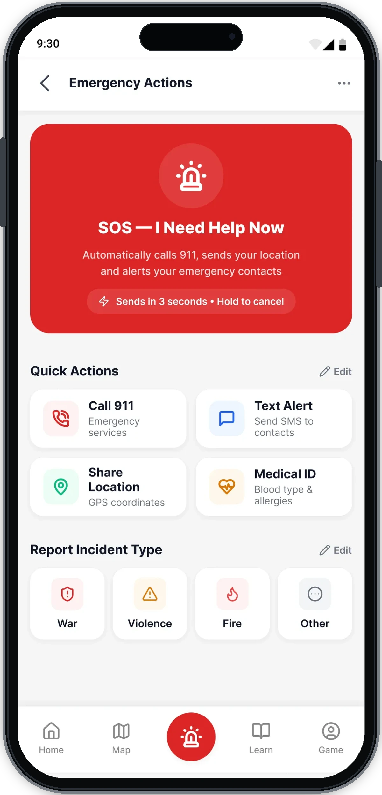
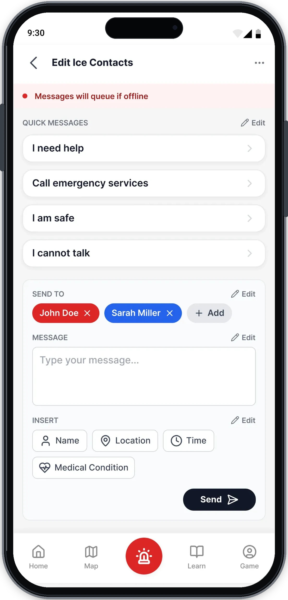
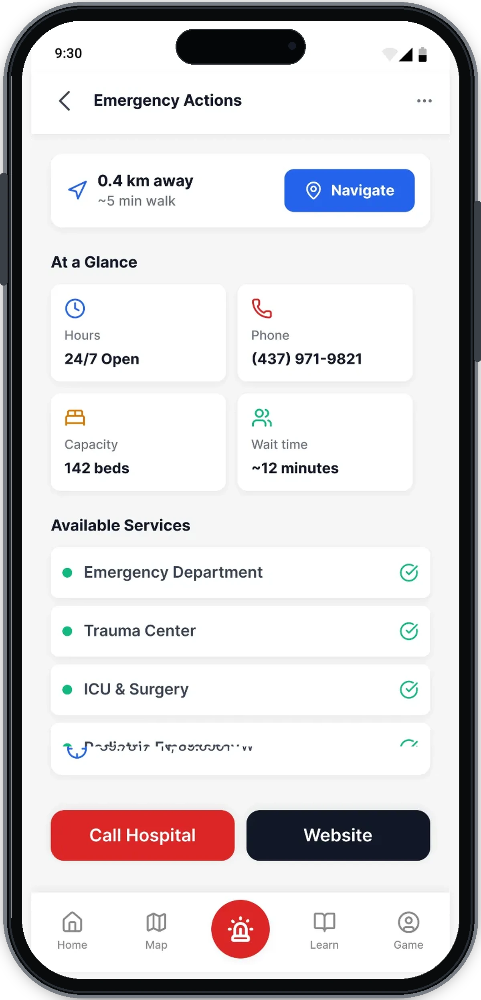
04 / The system
The route cannot end at the edge of a phone.
The master’s project extends the same hierarchy into maps, signs, shelter entrances, transport displays, kiosks, and tactile information. Each medium answers a different question while preserving one visual code.
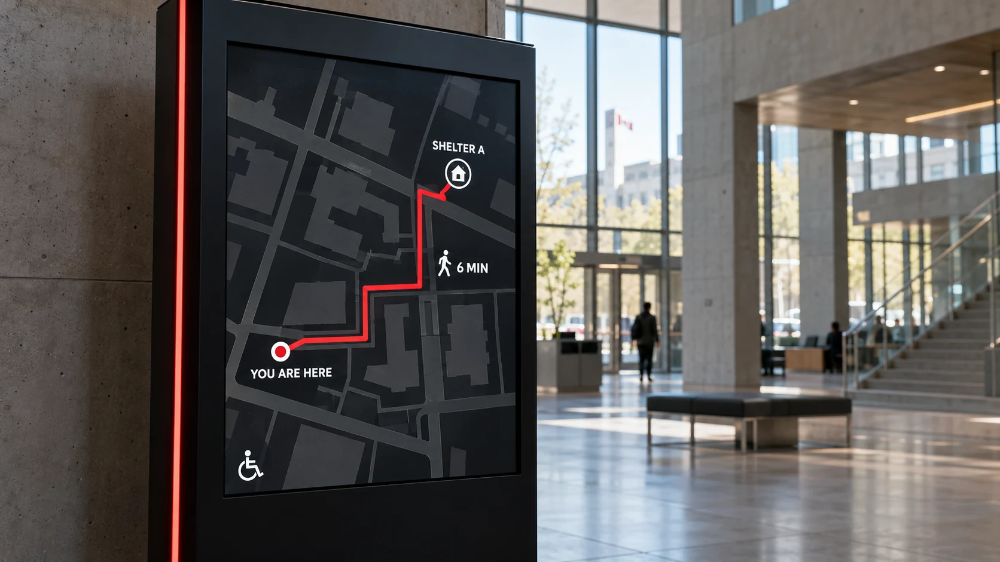
A shared map makes the current location, accessible route, travel time, and shelter destination legible before movement begins.
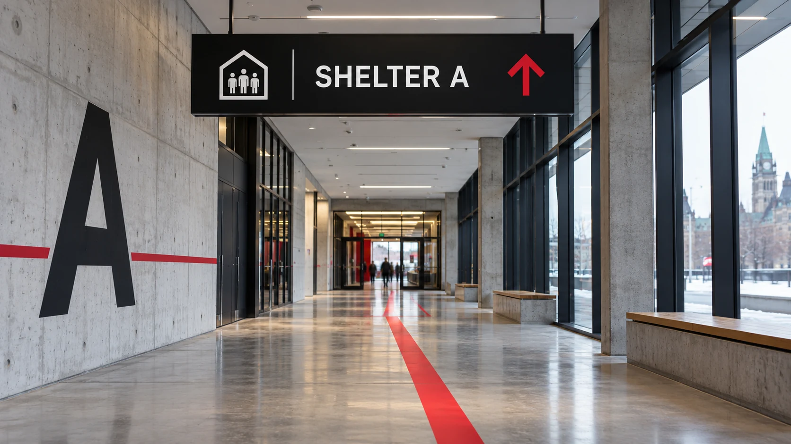
The destination and direction repeat overhead while one restrained red signal carries the person through the building.
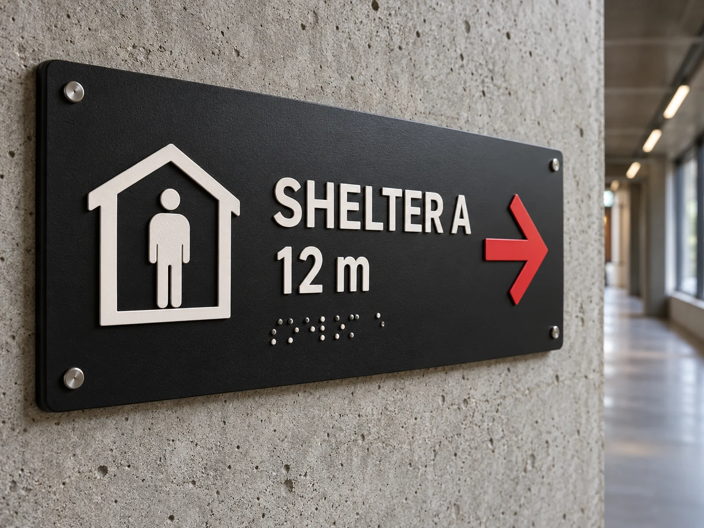
Raised type, Braille, contrast, distance, and a directional cue provide more than one way to understand the instruction.
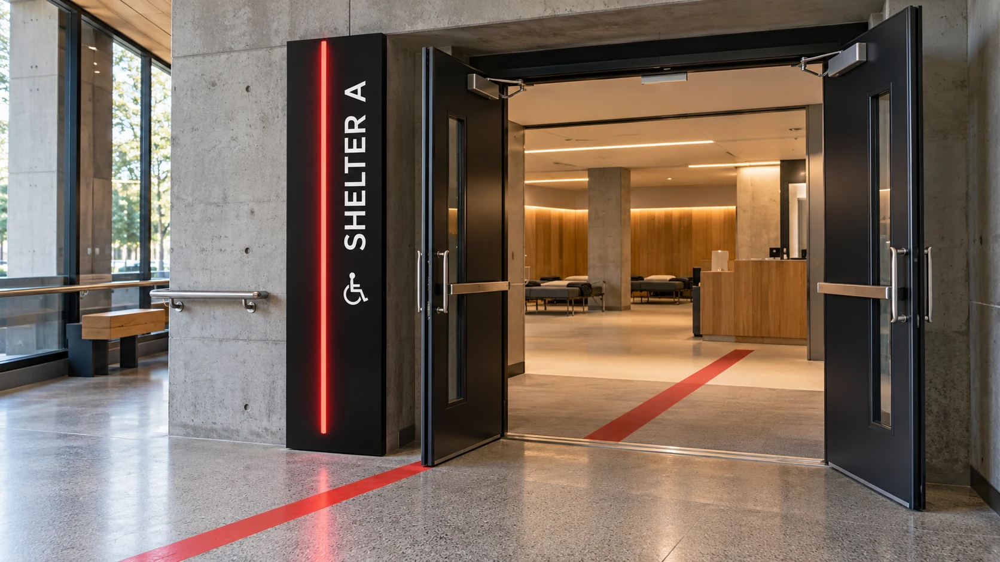
The route terminates at an accessible entrance with the same destination name, colour signal, and calm visual hierarchy.
Browse and prepare without relying on one device.
Find the entrance and keep moving when connectivity fails.
05 / Evidence & limits
A complete design concept—presented without invented claims.
The work delivers a high-fidelity mobile interface, information architecture, key emergency flows, and a coordinated visual communication system for digital and physical touchpoints. The system is grounded in standards review, comparative case analysis, scenario modelling, and accessibility principles documented in the academic research.
A clear hierarchy from signal to action, a reusable visual language, and coordinated scenarios across mobile and environmental media.
No emergency-service affiliation, shipped deployment, live data integration, representative usability result, or verified improvement in response time.
Important: addresses, routes, and statuses shown in the concept are illustrative. Real deployment would require verified official data, regulatory approval, implementation testing, and accessibility validation.